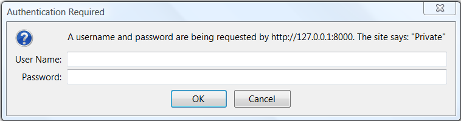
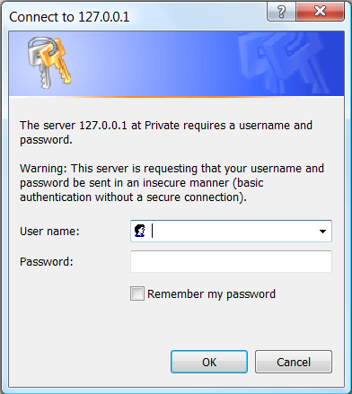
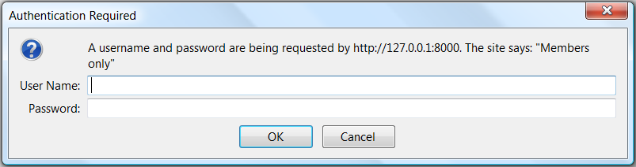
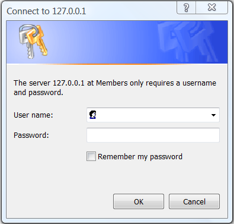

HTTP
Authentication
Authentication, Authorization and Access Control
Authentication is the process of verifying "someone is who he claims he is". In other words, authentication is to ascertain the identity of the users. This is usually carried out via a credential (username/password). Other techniques include smart card and biometrics (retina scan, voice recognition, or fingerprints).
Authorization followed authentication. Once the identity of the user is ascertained, the authorization process decides whether this client has the authority to access the requested resources. The criteria may include whether the client possesses the necessary authority (e.g., manager or worker has different authorities) or whether he has paid the admission or subscription.
Access control is a much more general way of controlling access to a resource. Access control is not limited to checking the identify of the client, it could include other criteria, such as the network address and hostname, the time of day, the type of browser which the client is using, the referrer, and etc. Apache provides a rich set of directives for controlling access to directories, files, and locations, e.g., <Directory>, <File>, <Location>, Allow, Deny, Order, and .htaccess (refer to Apache How-To: Access Control).
This section describes the identity-based access control, i.e., authentication and authorization. In Apache, authentication and authorization are inextricable and are configured together.
HTTP provides two schemes for authenticating clients: Basic Access Authentication and Digest Access Authentication. The specification is given in "RFC 2617 HTTP Authentication: Basic and Digest Access Authentication". It is important to stress that these schemes merely provide a mean for the client to send in his username/password for authentication. The schemes do not ensure message confidentially (i.e., message encryption), message integrity (man-in-the-middle attack), and non-repudiation. For high-risk and high-security systems which require these guarantees, you have to turn to SSL (Secure Socket Layout). HTTP with SSL (or HTTPS) will be discussed in the later chapter.
Basic Authentication
Basic Access Authentication scheme was introduced since HTTP/1.0. It is a simple scheme, which uses username/password to authenticate clients.
The client sends his username and password to the server. The server looks up the password file and decide whether the client is authorized to access the requested resource. The password file can be a simple text file, or a database (which greatly improves the retrieval and matching process for large user base). Users can be grouped into groups. Access can then be controlled at the group level. To improve on the flexibility, the protected space is divided into realm. Each username/password pair is valid for one particular realm.
CAUTION: The Basic Access Authentication scheme is not considered secure nor safe. This is because the username, password, and messages are all sent in clear text (i.e., not encrypted). Eavesdroppers or network snifters can easily pick up your username, password, and the messages. You should be extremely cautious when giving your username and password to a server that uses basic authentication scheme (if you use the same password to access your bank account!?). Use a dedicated "low-risk" password for this site instead. (The morale of this story is you should use different passwords for different purposes, although it could be hard to manage.)
Implementing the Basic Access Authentication Scheme
The configuration for basic access authentication involves 3 steps:
- Create a password file.
- Configure the Apache server to use this password file.
- Optionally, use a group file to group related users and control access on the group basis.
Step 1: To create the password file, use the utility "htpasswd.exe" distributed with Apache HTTP Server (in directory "%APACHE_HOME%\bin") as shown below:
> ... change directory to %APACHE_HOME\bin ... > htpasswd ? (The help menu) > htpasswd -c ../conf/basic.users bob (Option -c is used to create a new file) Automatically using MD5 format on Windows. New password: *** Re-type new password: *** Adding password for user bob > htpasswd ../conf/basic.users bill Automatically using MD5 format on Windows. New password: **** Re-type new password: **** Adding password for user bill > htpasswd ../conf/basic.users alice Automatically using MD5 format on Windows. New password: ***** Re-type new password: ***** Adding password for user alice > htpasswd ../conf/basic.users alan Automatically using MD5 format on Windows. New password: **** Re-type new password: **** Adding password for user alan
The above commands create a user file called "basic.users" in "%APACHE_HOME\conf"; followed by 4 users (with password). Make sure that this user file is outside the document directory and is protected from unauthorized persons. If you open this user file, you shall see that the digest of the passwords are stored, instead of the passwords in clear text:
bob:$apr1$c0Nw/XQI$mLuIl7DboHBkp4tZfh2Uj/
bill:$apr1$vn.O35Db$t8UasLOGIjBgVE93UvIMh0
alice:$apr1$1rPtsZaD$0MpAqMQC.KpePAffgnqK70
alan:$apr1$1pPU8Nwf$Ms/1EO90PBm25pnvaT5bi0
Step 2: To configure Apache HTTP server to use the password file we have just created, add the following directives into the appropriate <directory> of the configuration file "%APACHE_HOME%\conf\httpd.conf" (or place them inside the ".htaccess" of the directory to be protected if override is permitted).
<Directory protected-directories> AuthType Basic AuthName Private AuthUserFile conf/basic.users Require valid-user </Directory>
- The
<Directory>block directive sets up a group of directories for applying access control. The directives enclosed within the block (such asrequire valid-user) are applicable to all the directories (and their sub-directories) that match the protected-directories. - The directive
AuthType Basicspecifies that basic access authentication scheme is to be used. - The directive
AuthNamedefines a "realm" (or a partition of the entire protected space), which is a set of resources (directories, files, locations) that is accessible with the same username/password. The realms allow the protected resources on a server to be partitioned into a set of protection space, each with its own authentication scheme and/or authorization database. This realm name will be shown to the client when prompting for the username/password. (The above may not be correct for basic scheme, as realm name is not inside the password file – unlike digest scheme. Can we have two <directory>s of the same realm but use different password file?) - The directive "
Require valid-user" grants access to all valid users in the password file. Instead of granting access to all users, you could limit access to certain users by using the directive "Require user username1 username2 ...".
When a client requests for a protected resource, Apache replies with a "401 Authentication Required" response. This is to inform the client that user credential is needed. Upon receiving the 401 response, the browser will prompt the user to supply his username/password, and send them to the server for verification.
Since HTTP is a stateless protocol, every request will be treated on its own, without knowledge of the previous requests. That is to say, you have to supply the same username/password to every protected resource requested. Fortunately, the browser takes care of the details by caching the username, password, realm and server name, so that you do not have to type in your username/password for every request.
The authentication process is summarized as follows:
- A client requests for a web resource, which is protected under the basic access authentication scheme, via an HTTP GET request.
- The server returns a "401 Authorization Required" response. The 401 response includes a "
WWW-Authenticate" response header, specifying the type of authentication scheme and the realm that the protected resource belongs to. - The client re-submits the HTTP GET request with an "
Authorization" request header, which gives the credential (username/password) needed to access that realm. The credential is usually cached by the browser for all subsequent requests to the same realm of that particular server. - Server checks the credential. If it is acceptable, the server returns the requested resource with a "200 OK" status code. Otherwise, a "401 Authorization Required" response will be sent again. Most browsers will repeat step (2) to (4) for 3 times, before displaying the 401 message. The browser will display 401 message if the user cancels the request.
Message Trace
Let's look at a trace of messages under Basic Access Authentication. I have created a directory called "basic_auth" (under "htdocs"), which contains a "test.html" file. Assuming that Apache HTTP Server is running on port 8000.
- Client Request:
GET /basic_auth/test.html HTTP/1.1 Accept: image/gif, image/jpeg, */* Accept-Language: en-us User-Agent: Mozilla/4.0 (compatible; MSIE 6.0; Windows NT 5.1) Host: 127.0.0.1:8000 (blank line)
- Server Response:
HTTP/1.1 401 Authorization Required Date: Tue, 20 Oct 2009 07:25:42 GMT Server: Apache/2.2.14 (Win32) WWW-Authenticate: Basic realm="Private" Content-Length: 401 Content-Type: text/html; charset=iso-8859-1 (response message body omitted)
- Client:
Instead of displaying "401 Authorization Required" response, the browser puts up a dialog (as shown below for firefox and IE) showing the server, the realm, and prompts for the username/password.
 The user provides the credential. The browser re-submits the request with an "Authorization" header, giving his username/password.
GET /basic_auth/test.html HTTP/1.1 Accept: image/gif, image/x-xbitmap, image/jpeg, image/pjpeg, */* Accept-Language: en-us User-Agent: Mozilla/4.0 (compatible; MSIE 6.0; Windows NT 5.1) Host: 127.0.0.1:8000 Connection: Keep-Alive Authorization: Basic YWxpY2U6YWxpY2U=
- Server:
If the credential is acceptable, the server returns the requested resource with status code "200 OK"
HTTP/1.1 200 OK Date: Tue, 20 Oct 2009 07:37:12 GMT Server: Apache/2.2.14 (Win32) Last-Modified: Sat, 20 Nov 2004 07:16:26 GMT ETag: "f00000003e4f9-2c-3e94b66c2e680" Accept-Ranges: bytes Content-Length: 44 Content-Type: text/html (body omitted)
If the credential is not acceptable, the server sends a "401 Authorization Required" again. The authentication process repeats.
HTTP/1.1 401 Authorization Required Date: Tue, 20 Oct 2009 07:38:43 GMT Server: Apache/2.2.14 (Win32) WWW-Authenticate: Basic realm="Private" Content-Length: 401 Content-Type: text/html; charset=iso-8859-1 (body omitted)
The browser may prompt you three times, before displaying this 401 message. The browser may cache the credential, and automatically include the "Authorization" header for subsequent accesses to the same realm of the same server, so as to save you the trouble of keep typing your username/password.
Security Exposure
In basic access authentication, the credential client sends to the server is not encrypted but simply Base64-encoded (refer to RFC2045 for specification on Base64 encoding). If you look up the Base64 table (or use WinZip), you will see the username/password in the Authorization header in clear text.
The most serious flaw in basic access authentication is that it transmits the password in clear text over the network. Hence, this password should not be the same as the one you use to access your bank account. Furthermore, once authenticated, the message is also sent in clear text. The username, password, and the message are subjected to network sniffing.
User Group
Step 3: Optionally, you can group the users into groups, and grant access to selected groups. To use group access control, you have to create a "Group File" (save as "%APACHE_HOME%/conf/basic.groups").
manager: alice alan worker: bob bill
In the Apache's configuration "conf\httpd.conf", include the following directives:
<Directory protected-directories> AuthType Basic AuthName Private AuthUserFile conf/basic.users AuthGroupFile conf/basic.groups Require group manager </Directory>
Configuration Directives
Refer to Apache documentation @ "%APACHE_HOME%\htdocs\manual\mod\mod_auth.html" for details on the configuration directives.
AuthType: selects the type of user authentication. Only Basic and Digest are currently implemented.
AuthType Basic|Digest
AuthUserFile: specifies the name of the password file, which can be created using htpasswd utility. Each line of the user file contains a username followed by a colon, followed by the crypt() encrypted password (or MD5-digested password).
AuthUserFile user-filename
AuthGroupFile: specifies the name of the group file. Each line of the group file contains a group name followed by a colon, followed by the members' username separated by a space.
AuthGroupFile group-filename
Require: specifies which authenticated users can access the protected resource.
Require entity-name-1 [entity-name-2] ...
Require valid-user: All valid users in the password file can access the resource.Require user username1 username2 ...: only the named user(s) can access the resource.Require group groupname1 groupname2 ...: Only users in the named group(s) can access the resource.Require file-owner: Only the user, whose name matches the name of the file owner, can access the resource.Require file-group: Only the members of the group, whose name matches the name of the file owner group, can access the resource.
Access controls are effective for all HTTP request methods (GET, POST etc) used to request the resource. If you wish to apply access controls only to specific methods (e.g., POST but not GET), you can place the Require directive inside a <Limit> or <LimitExcept> section.
Satisfy: set the access policy if both Allow (for access control) and Require (for authentication) directives are used. It takes value of either all (default) or any. This directive is only useful if access to aparticular realm is being restricted by both username/password and client host address. In this case the default behavior of "all" requires the client passes the address access restriction and provided a valid username/password. With the "any" option, the client will be granted access if he either passes the host restriction or provide a valid username/password. This can be used to password restrict an area, but to let clients from particular addresses in without prompting for a password.
Satisfy all|any
Digest Access Authentication
Like basic access authentication, digest access authentication requires a client to supply his credential, in terms of username and password. Unlike basic access authentication, digest access authentication does not send the password over the network in clear text. Instead, the MD5 digest of the password is transmitted (hence, the name digest access authentication). Network snifters cannot recover your password from the digest.
(A digest is a hash value from a one-way hash function. Suppose that y is the digest or one-way hash value of x using a one-way hash function h, i.e., y = h(x). It is easy to compute y from x, but almost impossible to compute x given y, even if the function h is known. Furthermore, even if x1 and x2 are similar, the corresponding digests y1=h(x1) and y2=h(x2) will be far apart. Information about MD5 digest can be found from RFC1321 or at http://userpages.umbc.edu/~mabzug1/cs/md5/md5.html.)
Digest access authentication scheme is not intended to be a complete solution to the need of security for Internet. The scheme does not provide encryption of message (i.e. message confidentiality), message integrity, and non-repudiation. The digest scheme is meant to avoid the serious flaw in the basic scheme (i.e., sending password in clear text) and to replace the basic scheme.
Like basic scheme, digest scheme is based on a simple challenge-response exchange for user authentication. The server challenges the client with a nonce value, and expects a response, which is the digest of the username, password, the given nonce value, the HTTP method, and the requested URL. It is important to note that the password is not sent in cleartext, as in the basic scheme. A hash value involving the password is sent instead. Network snifters will not be able to reconstruct the password from the intercepted digest. The nonce, which ideally should be different for difference request, is used to prevent "replay attack".
The details of the authentication steps involved in the digest scheme are as follows:
- The client requests for a web resource protected by digest authentication scheme, via an HTTP GET request.
- The server returns a "401 Authentication Required" response, specifying the authentication scheme, the realm, and a nonce, in the "
WWW-Authenticate" response header. - The client combines the password, nonce, HTTP method and URI; computes the digest; and sends this digest back to the server. An example of computation is as shown:
MD5(MD5(<password> + ":" + <nouce> + ":" + MD5(<method> + ";" + <uri>)
- The server independently generates the hash and verifies with the hash received. It sends back the resource requested (with status "200 OK") if the two hash values match. Otherwise, a "401 Authentication Required" will be sent, and the authentication process repeats (or until the client cancels the request).
Implementing Digest Access Authentication
Like basic scheme, the configuration needed for using digest access authentication in the Apache HTTP Server may involve the following 3 steps:
- Create a password file;
- Configure the Apache server to use this password file;
- Optionally, define a group file, and apply access control at group level.
Step 1: To create the password file, you can use the utility "htdigest" provided in "%APACHE_HOME%\bin" as follows:
> htdigest -h Usage: htdigest [-c] password-file realm username The -c flag creates a new file. > htdigest -c ..\conf\digest.users "members only" bob Adding password for bob in realm members only. New password: *** Re-type new password: *** > htdigest ..\conf\digest.users "members only" alice Adding user alice in realm members only New password: ***** Re-type new password: *****
The content of the digest user file "conf\digest.users" is as shown:
bob:members only:f64f2af9501033efe7c402417681e05b
alice:members only:d65afa1afb84c30a7547aecff4431700
Notice that, unlike basic scheme, each pair of username/password is associated with a realm. The username and password is only valid for that particular realm.
Step 2: To activate the digest scheme, you have to include these directives in the Apache's configuration "conf\httpd.conf" (or .htaccess if override is allowed):
# uncomment these two lines to load the digest authentication module LoadModule digest_auth_module modules/mod_auth_digest.so ...... AddModule mod_auth_digest.c # for older Apache versions only ...... <Directory protected-directories> AuthType Digest AuthName "members only" AuthDigestFile conf/digest.users # Use AuthUserFile for Apache 2 Require user bob </Directory>
Directive "AuthType Digest" is used to activate the digest access authentication. Directive AuthDigestFile is used to specify the location of the password file. (If you encounter error with AuthDigestFile directive, use AuthUserFile directive instead, for Apache 2.) The realm in the AuthName must match the user file and it is case sensitive.
Step 3: Optionally, you can use a group file to control access at the group level. The format of the group file is the same as the basic authentication. For example:
admin: alice alan audit: bob bill
An example of configuration is as follows:
<Directory protected-directories> AuthType Digest AuthName "members only" AuthDigestFile conf/digest AuthDigestGroupFile conf/digest.groups Require group admin </Directory>
Directive AuthDigestGroupFile is used to specify the group file (instead of AuthGroupFile in the basic scheme).
Message Trace
A trace of messages involved in the digest access authentication is as follows. A directory called "digest_auth" is created under "htdocs", containing a file "test.html". Assuming that Apache HTTP server is running on port 8000.
- Client Request:
GET /digest_auth/test.html HTTP/1.1 Accept: image/gif, image/jpeg, */* Accept-Language: en-us User-Agent: Mozilla/4.0 (compatible; MSIE 6.0; Windows NT 5.1) Host: 127.0.0.1:8000
- Server Response:
HTTP/1.1 401 Authorization Required Date: Tue, 20 Oct 2009 08:16:43 GMT Server: Apache/2.2.14 (Win32) WWW-Authenticate: Digest realm="Members only", nonce="LHOKe1l2BAA=5c373ae0d933a0bb6321125a56a2fcdb6fd7c93b", algorithm=MD5, qop="auth" Content-Length: 401 Content-Type: text/html; charset=iso-8859-1 (body omitted)
- Client:
Instead of displaying "401 Authorization Required" response, the browser puts up a dialog specifying the server name and the realm, and prompt for your username/password. Note that in IE, the appearance of the dialog window is different from that produced by the basic authentication scheme.
 The client provides the credential. The browser re-submits the request.
GET /digest_auth/test.html HTTP/1.1 Accept: image/gif, image/jpeg, */* Accept-Language: en-us User-Agent: Mozilla/4.0 (compatible; MSIE 6.0; Windows NT 5.1) Host: 127.0.0.1:8000 Authorization: Digest username="bob", realm="members only", qop="auth", algorithm="MD5", uri="/digest_auth/test.html", nonce="5UImQA==3d76b2ab859e1770ec60ed285ec68a3e63028461", nc=00000001, cnonce="1672b410efa182c061c2f0a58acaa17d", response="3d9ebe6b9534a7135a3fde59a5a72668"
- Server:
If the credential is acceptable, the server returns the resource requested with status code "200 OK".
HTTP/1.1 200 OK Date: Sun, 08 Feb 2004 14:08:57 GMT Server: Apache/1.3.29 (Win32) Authentication-Info: rspauth="670ff3158cec20b73d7342932f8c40a1", cnonce="1672b410efa182c061c2f0a58acaa17d", nc=00000001, qop=auth Last-Modified: Sat, 07 Feb 2004 10:53:25 GMT ETag: "0-23-4024c3a5" Accept-Ranges: bytes Content-Length: 35 Keep-Alive: timeout=15, max=100 Connection: Keep-Alive Content-Type: text/html (body omitted)
If the credential is not acceptable, the server again returns "401 Authorization Required" to repeat the authentication process. The browser may prompt you 3 times before displaying the "401" message.
HTTP/1.1 401 Authorization Required Date: Sun, 08 Feb 2004 14:20:00 GMT Server: Apache/1.3.29 (Win32) WWW-Authenticate: Digest realm="members only", nonce="kEUmQA==afc92fa0cb1ce89577fc1c1c7d80389b8ddd7137", algorithm=MD5, qop="auth" Keep-Alive: timeout=15, max=100 Connection: Keep-Alive Transfer-Encoding: chunked Content-Type: text/html; charset=iso-8859-1 (body omitted)
Digesting Details
When a client requests for a protected resource under the digest scheme, the server returns a "401 Authentication Required" response, which includes a "WWW-authenticate" header. The following information is included in the "WWW-authenticate" header:
Digest: inform the client that the digest access authentication scheme is in place.realm: the "realm" of which the protected resource belongs to (recall that username/password is set at the realm basis, and only valid for that particular realm).nounce(server's nounce): the server should uniquely generate a nounce each time a "401" response is triggered (so as to prevent "replay attack"). The value of nonce is implementation dependent. For example, a server's nonce can consists of:Time-Stamp:H(Time-stamp:Etag:Private-key)
Time-stamp can be used to limit the nonce's validity period to prevent "replay attack". Etag, which is an entity header of the requested document, can prevent replay attack to an updated version of that document. Server may choose to implement a "one-time nonce" for PUT and POST requests and a time-stamp nonce for GET request.- algorithm: to inform the client the hashing algorithm(s) supported by the server. Currently, the algorithm includes MD5 and MD5-sess (MD5 session). The client can select one of the supported algorithms.
- qop (quality of protection): to inform the client the types of "quality of protection" supported by the server. Currently, the gop includes "auth" (authentication) and "auth-int" (authentication with message integrity, the hash value contains the message entity, to assure the integrity of the message). The client can choose one of these supported options.
Upon receiving the "401" response from the server, the client must include an "Authentication" header and re-submit the request. The following information is provided in the "Authentication" header:
- Digest
- username
- realm
- gop (quality of protection): the quality of protection chosen by the client from the available server's options, either "auth" or "auth-int".
- algorithm: the digest algorithm chosen by the client from the available server's options, either "MD5" or "MD5-sess".
- uri: the URI from the request line, duplicated here because the proxy are allowed to change the request URI in transit.
- nonce (server's nonce): the client echos back the server's nonce.
- nc (nonce count): the number of requests that the client has sent with this nonce. This allow server to detect replay attack by maintaining its own copy of the count, if desired.
- cnonce (client's nonce): a nonce provide by the client, contributing to the resulting hash value to avoid chosen plaintext attack, and some degree of mutual authentication.
- response: the hash value, which is computed according to the settings of gop (auth or auth-int) and algorithm (MD5 or MD5-sess) as follows:
If "qop" is used, the digest is: H(H(A1):nonce:nc:cnonce:qop:H(A2)) where H is the hash function such as MD5; A1 and A2 will be given later. If "gop" is not used, the digest is: H(H(A1):nonce:H(A2)) If the "algorithm" chosen is "MD5": A1 = Username:realm:password If the "algorithm" chosen is "MD5-sess", then A1 is calculated only once – on the first request by the client following receipt of a WWW-Authenticate challenge from the server. It uses the server nonce from that challenge, and the first client nonce: A1 = Username:realm:password:nouce:cnonce If "gop" is "auth", then A2 = Method:URL If "gop" is "auth-int" for message integrity, then A2 = Method:URL:H(entity-body)
For example, if "gop=auth" and "algorithm=MD5" then the digest is:
MD5(MD5(username:realm:password):nonce:nc:cnonce:qop:MD5(method:URL))
Obviously, the value of "response" from the client is different in different request. This is to prevent the replay attack.
It is important to note that the server does not have to keep the clear text of password, but the hash of
MD5(Username:realm:password)for digest authentication purpose. This further improves the security in case the server was compromised.
Security Considerations
Basic access authentication scheme has the following flaws:
- Password is sent in cleartext.
- Server must keep the username/password in the database. If the password file is compromise, all users will be affected (although most likely the password file is encrypted).
- No message integrity.
Digest scheme overcomes these flaws. However, it does not assure message confidentiality and non-repudiation. It merely provides a more secure and safe way for clients to submit their credential. It is not as secure as Kerberos, client-side private key, or SSL, but much better than telnet, ftp and of course, basic authentication scheme.
You should certainly replace the basic scheme with the digest scheme, unless password security is no of your concern.
One final note: by modern cryptographic standards, the MD5 digest algorithm is considered weak. (Need to verify!)
Configuration Directives:
Refer to "%APACHE_HOME%\htdocs\manual\mod\mod_auth_digest.html" for details of the configuration directives.
AuthDigestFile: specifies the location of the password file for digest authentication, which can be created using the htdigest utility provided. (Use AuthUserFile if you encounter error.)
AuthDigestFile digest-user-filename
AuthDigestGroupFile: specifies the location of the group file. Each line of the group file contains a groupname followed by a colon, followed by the members' username separated by a space. The format of the group file is the same as the basic authentication.
AuthDigestGroupFile digest-group-filename
Using Database for Password files
Matching the username/password from a flat file created using utilities "htpasswd" and "htdigest" is slow if the number of users is large. You can use a database to store the username/password to speed up the password verification process.
Read the Apache documentation.
REFERENCES & RESOURCES
- Apache FAQ @ %APACHE_HOME%\htdocs\manual\FAQ.html.
- Apache documentation @ "%APACHE_HOME%\htdocs\manual\".
- "How-To: Authentication, Authorization and Access Control" @ "%APACHE_HOME%\htdocs\manual\howto\auth.html".
- RFC 1945: "Hypertext Transfer Protocol HTTP/1.0", 1996.
- RFC 2616: "Hypertext Transfer Protocol HTTP/1.1", 1999.
- RFC 2617: "HTTP Authentication: Basic and Digest Access Authentication", 1999.
- RFC 2045: "Multipurpose Internet Mail Extension (MIME) Part 1: Format of Internet Message Bodies", 1996.
- RFC 1321: "The MD5 Message Digest Algorithm", 1992.
Latest version tested: Apache HTTP Server 2.2.14
Last modified: October 19, 2009